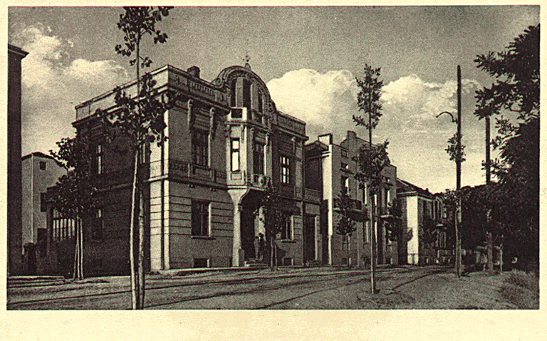
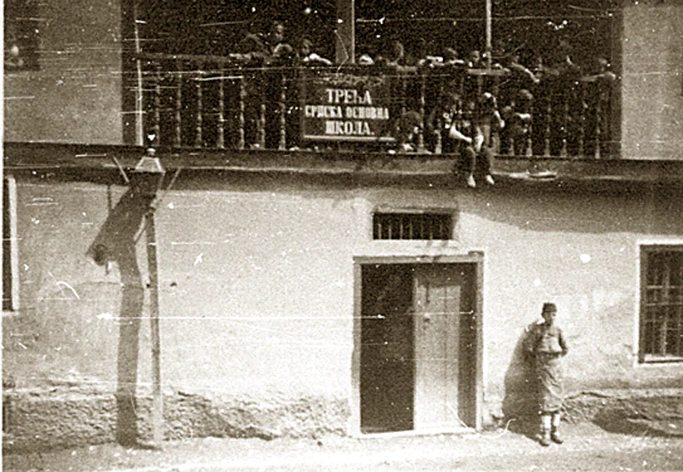
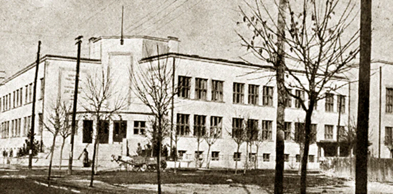
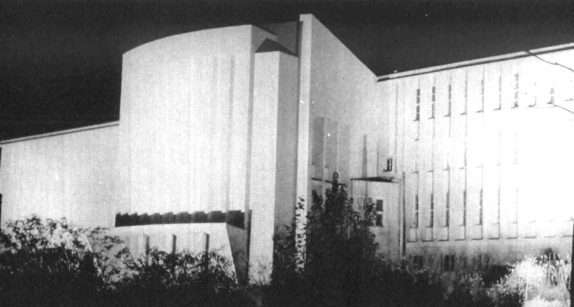

Филозофски факултет
- Реализација
- Коле Чашуле, Благоја Дрнков
- Година
- 1947
- Должина
- 00:04

Средното училиште Идадија. Изградено кон крајот на 19 век. Во него наставата траела осум години, и можеле да ја следат ученици од сите вероисповести. Подоцна оваа зграда станува Учителско училиште, се до земјотресот во 1963 година, во кој многу се оштетила. Поради тоа во 1965 година е срушена, а како спомен се оставени влезот на зградата со четирите столба. До ден денеска таа област скопјани ја нарекуваат Идадија. Во позадина е училиштето за уметности и занаети.

Учителското училиште (20-тите години)

Дел од градскиот парк со објектот со занаетчиското училиште. (20-тите години)

Зградата на средното училиште Идадија, а по Втората светска војна "Учителско училиште", која била разрушена во катастрофалниот земјотрес 26 Јули 1963 година.

Уметничко-занаетчиско училиште, изградено кон крајот на 19 век. Се наоѓало во непосредна близина на учителската училиште. Во земјотресот 1963 година, значително се оштетило, поради што е срушено.

Скопскиот универзитет во 1920 год. на кејот на р.Вардар. Во него бил сместен филозофскиот факултет како дел од Белградскиот универзитет.

Скопскиот универзитет во 1920 год. на кејот на р.Вардар. Во него бил сместен филозофскиот факултет како дел од Белградскиот универзитет.

Дворишната зграда на машката гимназија. ( 1912 година)

Скопската машка гимназија изградена во 1902-04 година. Се одликува со неокласични елементи. Во преден план е улицата "Поенкаре", покасно "Ленинградска".

Машката гимназија, изградена 1902 година.

Големата медреса, на улица Илинденска (20-тите години)

Основното училиште "Св. Богородица" - 20-тите години.

Основно школо "Јован Скерлиќ" - 20-тите години.

Трето народно основно училиште (20-тите години)

Српско - Еврејското основно училиште во Еврејското маало.
(крај на 19 век)

Основното училиште "Ѓура Јакшиќ" (20-тите години)

Народно основно училиште "Кралица Марија" - 20-тите години.

Основното училиште "Цар Душан", до зградата Мацура на градскиот плоштад - 20-тите години.
Основното училиште "Цар Душан", до зградата Мацура на градскиот плоштад - 20-тите години.

Основното училиште "Бранко Радичевиќ" - 20-тите години.

Народно училиште "Љуба Ковачевиќ" - 20-тите години.

Народно училиште "Владимир Кариќ" - 20-тите години.

Народно училиште "Доситеј Обрадовиќ", во маалото Саук чешма - Чаир - 20-тите години.

Основно училиште "Вук Стефан Караџиќ" - 20-тите години.

Народно училиште "Мехмед Соколовиќ" - 20-тите години.

Народно училиште "Осман Џикиќ" - 20-тите години.

Трговската академија - 20-тите години.

Трговската академија - 20-тите години.

Дворот на машката гимназија - 20-тите години.

Новата зграда на основно училиште "Доситеј Обрадовиќ", изградено 30-тите години.

Основното училиште "Гоце Делчев". (фотографирано 1934 година)

Основното училиште "Гоце Делчев". (фотографирано околу 1950 година)

Женската гимназија - ноќе. Во преден план е споменикот на ослободителите на Скопје. (околу 50-тите години)

Женската гимназија, изградена 30-тите години, а фотографијата е од 50-тите години. Пред зградата е споменикот "Ослободителите на Скопје"

Природо научен факултет - 50-тите години

Основното училиште "11 Октомври" - 60-тите години

Технички факултет - 60-тите години

Филмски преглед бр. 10
 Аквадукт4 разгледници
Аквадукт4 разгледници Кале30 разгледници
Кале30 разгледници Мостови60 разгледници
Мостови60 разгледници Кеј58 разгледници
Кеј58 разгледници Плоштад46 разгледници
Плоштад46 разгледници Објекти66 разгледници
Објекти66 разгледници Христијански храмови19 разгледници
Христијански храмови19 разгледници Муслимански објекти33 разгледници
Муслимански објекти33 разгледници Офицерски дом29 разгледници
Офицерски дом29 разгледници Театар28 разгледници
Театар28 разгледници Железничка станица13 разгледници
Железничка станица13 разгледници Училишта36 разгледници
Училишта36 разгледници Паркови12 разгледници
Паркови12 разгледници Пазари18 разгледници
Пазари18 разгледници Улици38 разгледници
Улици38 разгледници Панорама I60 разгледници
Панорама I60 разгледници Панорама II30 разгледници
Панорама II30 разгледници Колажи55 разгледници
Колажи55 разгледници Поплави9 разгледници
Поплави9 разгледници Земјотрес27 разгледници
Земјотрес27 разгледници Скопје 200026 разгледници
Скопје 200026 разгледници